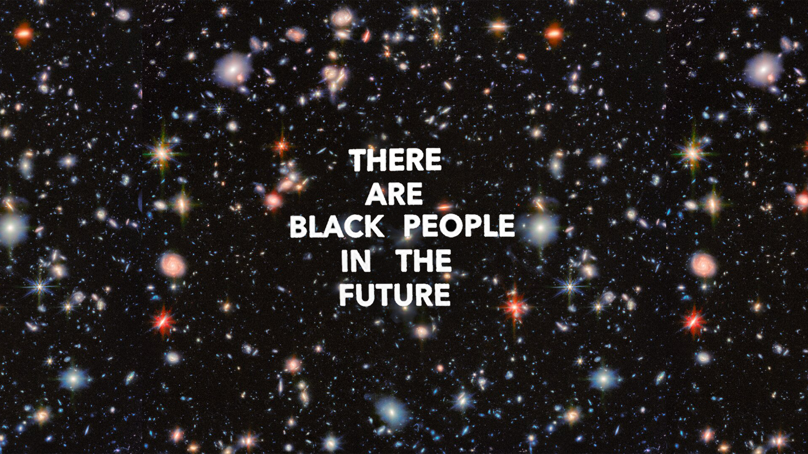

Abstract
African Diasporic cultures are deeply underrepresented in video games, but this is a part of a
larger problem. Colonialism, a violent act of conquering and creating economy out of the lives and bodies of
African people, has lasting negative effects in access to education, resources, and global representation.
However, African Diasporic people have been able to create with these limitations in place.
From the at-home video game console to President of Xbox, the contributions to the video game industry are far
and wide. However, the games being created are still representative of a white male hegemonic view. This is
harmful to the players, developers, and global view surrounding African Diasporic people who face discrimination
in systemic ways in tandem with avenues of play. By decolonizing the minds of video game developers and
encouraging new developers to create stories that resonate with their African Diasporic culture, new code void
of harmful stereotypes and misconstructions of African people in games can be written.
My research will begin with the history around the Trans-Atlantic slave trade that displaced Africans in the
Americas and the innovative creators of technology post emancipation. Next, it will focus on the current
programs created to encourage Black boys to become game testers and current trailblazers in the industry.
Finally, I will imagine an Afrofuturistic-inspired game design world. As the future begins to embrace wider
technology, video games as emerging media is an industry that can be the preservation of African Diasporic
cultures and histories via the African Diasporic game developers who are coming into the field.